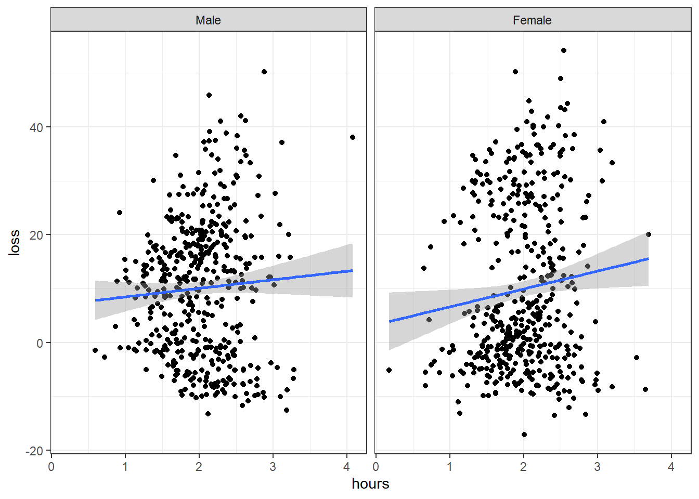
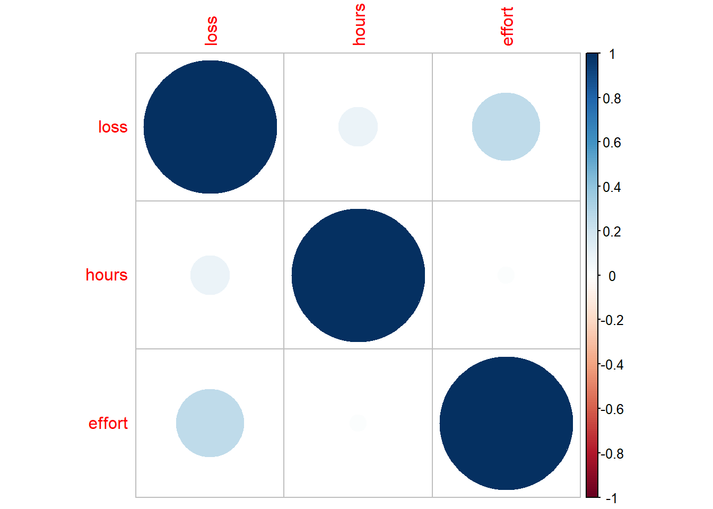
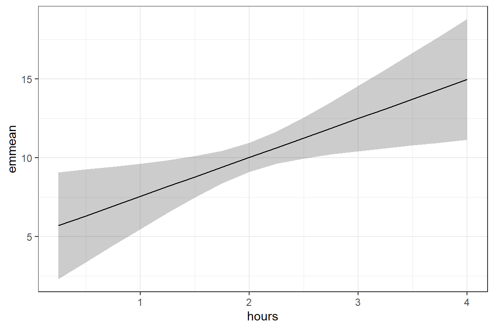
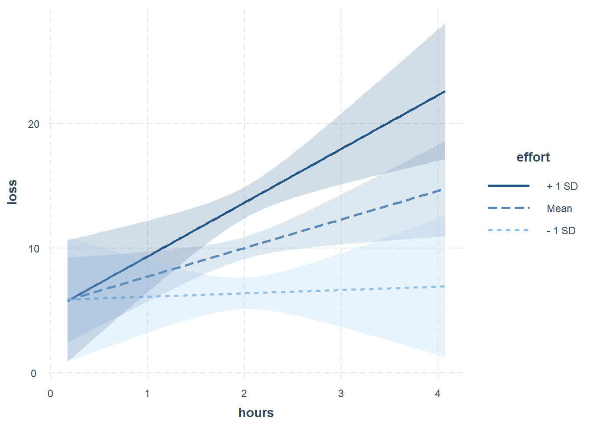
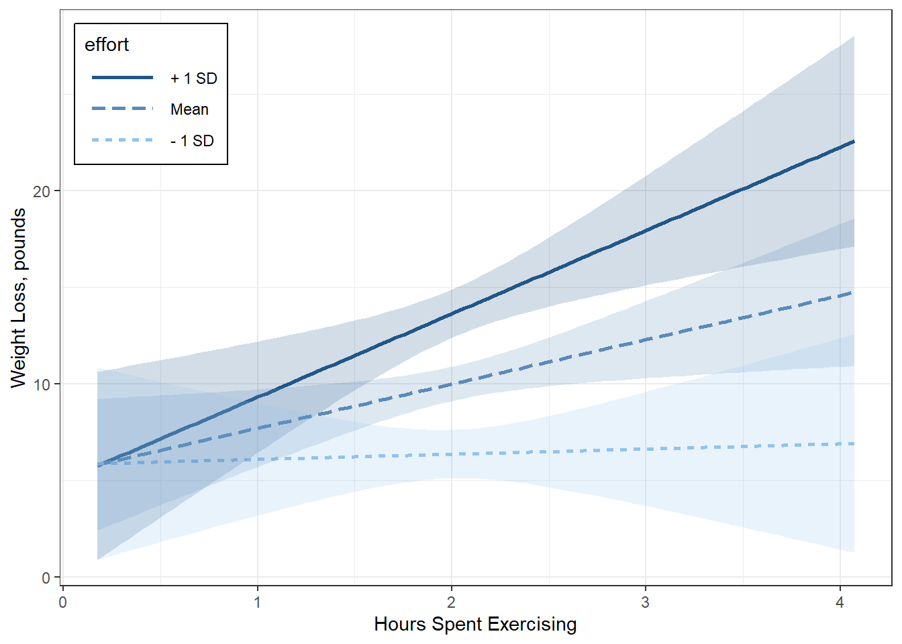
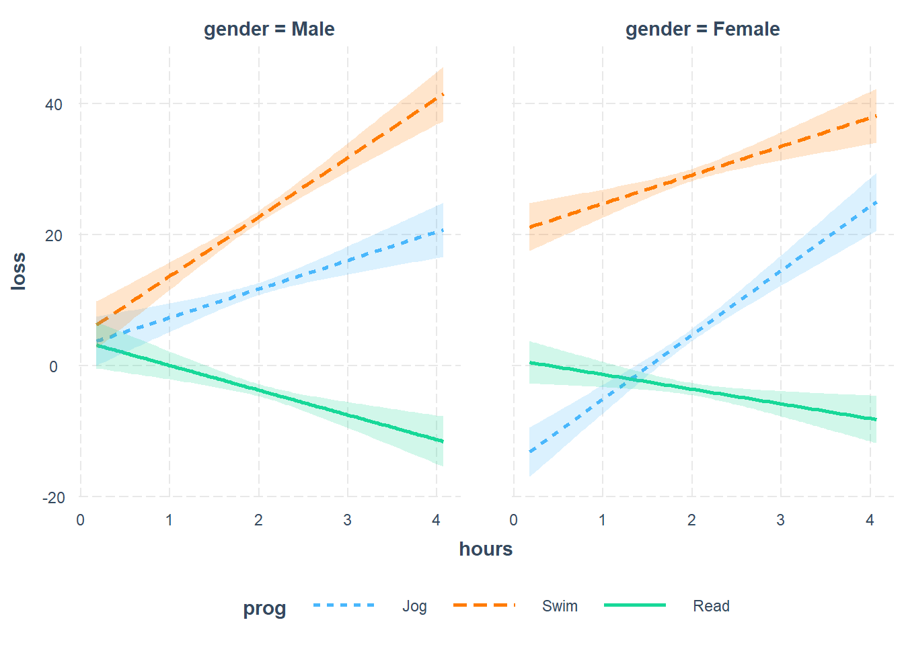
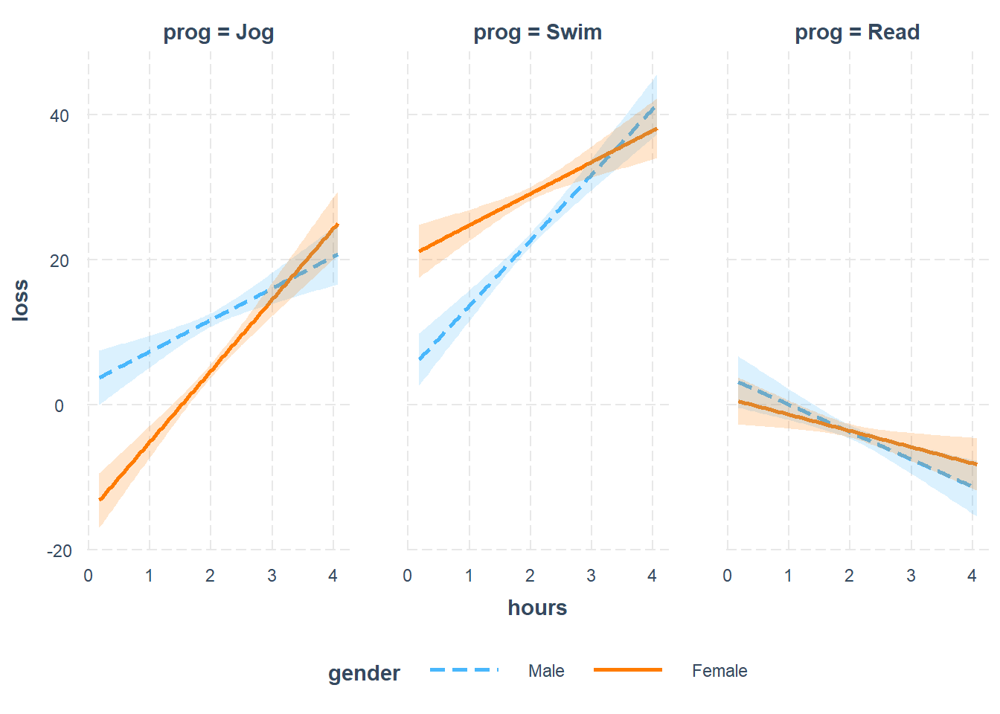

7 Interactions Example
Taken from: https://stats.idre.ucla.edu/r/seminars/interactions-r/
7.1 Motivation
Suppose you are doing a simple study on weight loss and notice that people who spend more time exercising lose more weight. Upon further analysis you notice that those who spend the same amount of time exercising lose more weight if they are more effortful. The more effort people put into their workouts, the less time they need to spend exercising. This is popular in workouts like high intensity interval training (HIIT).
You know that hours spent exercising improves weight loss, but how does it interact with effort? Here are three questions you can ask based on hypothetical scenarios.
I’m just starting out and don’t want to put in too much effort. How many hours per week of exercise do I need to put in to lose 5 pounds?
I’m moderately fit and can put in an average level of effort into my workout. For every one hour increase per week in exercise, how much additional weight loss do I expect?
I’m a crossfit athlete and can perform with the utmost intensity. How much more weight loss would I expect for every one hour increase in exercise compared to the average amount of effort most people put in?
Additionally, we can visualize the interaction to help us understand these relationships.
7.2 The Weight Loss Study
This is a hypothetical study of weight loss for 900 participants in a year-long study of 3 different exercise programs, a jogging program, a swimming program, and a reading program which serves as a control activity.
Variables
loss: weight loss (continuous), positive = weight loss, negative scores = weight gainhours: hours spent exercising (continuous)effort: effort during exercise (continuous)- 0 = minimal physical effort and
- 50 = maximum effort
prog: exercise program (categorical)- jogging=1
- swimming=2
- reading=3
gender: participant gender (binary)- male=1
- female=2
Definitions
What exactly do I mean by decomposing, probing, and plotting an interaction?
- decompose: to break down the interaction into its lower order components (i.e., predicted means or simple slopes)
- probe: to use hypothesis testing to assess the statistical significance of simple slopes and simple slope differences (i.e., interactions)
- plot: to visually display the interaction in the form of simple slopes such as values of the dependent variable are on the y-axis, values of the predictor is on the x-axis, and the moderator separates the lines or bar graphs
Let’s define the essential elements of the interaction in a regression:
- DV: dependent variable (Y), the outcome of your study (e.g., weight loss)
- IV: independent variable (X), the predictor of your outcome (e.g., time exercising)
- MV: moderating variable (W) or moderator, a predictor that changes the relationship of the IV on the DV (e.g, effort)
- coefficient: estimate of the direction and magnitude of the relationship between an IV and DV
- continuous variable: a variable that can be measured on a continuous scale, e.g., weight, height
- categorical or binary variable: a variable that takes on discrete values, binary variables take on exactly two values, categorical variables can take on 3 or more values (e.g., gender, ethnicity)
- main effects or slopes: effects or slopes for models that do not involve interaction terms
- simple slope: when a continuous IV interacts with an MV, its slope at a particular level of an MV
- simple effect: when a categorical IV interacts with an MV, its effect at a particular level of an MV
7.2.1 Import Data
Rows: 900
Columns: 6
$ id <int> 1, 2, 3, 4, 5, 6, 7, 8, 9, 10, 11, 12, 13, 14, 15, 16, 17, 1...
$ loss <dbl> 18.022263, 10.186416, 19.747276, 1.883600, 14.242589, 19.694...
$ hours <dbl> 1.836704, 2.389360, 2.362117, 2.520866, 1.889828, 2.367162, ...
$ effort <dbl> 37.71218, 26.72401, 36.31657, 20.70048, 24.72712, 33.66948, ...
$ gender <int> 1, 1, 1, 1, 1, 1, 1, 1, 1, 1, 1, 1, 1, 1, 1, 1, 1, 1, 1, 1, ...
$ prog <int> 1, 1, 1, 1, 1, 1, 1, 1, 1, 1, 1, 1, 1, 1, 1, 1, 1, 1, 1, 1, ... id loss hours effort
Min. : 1.0 Min. :-17.138 Min. :0.1751 Min. :12.95
1st Qu.:225.8 1st Qu.: -1.743 1st Qu.:1.6764 1st Qu.:26.26
Median :450.5 Median : 7.883 Median :2.0051 Median :29.63
Mean :450.5 Mean : 10.021 Mean :2.0024 Mean :29.66
3rd Qu.:675.2 3rd Qu.: 20.049 3rd Qu.:2.3375 3rd Qu.:33.10
Max. :900.0 Max. : 54.150 Max. :4.0722 Max. :44.08
gender prog
Min. :1.0 Min. :1
1st Qu.:1.0 1st Qu.:1
Median :1.5 Median :2
Mean :1.5 Mean :2
3rd Qu.:2.0 3rd Qu.:3
Max. :2.0 Max. :3 7.2.2 Wrangle the data
data_clean <- data_raw %>%
dplyr::mutate(id = factor(id)) %>%
dplyr::mutate(gender = factor(gender) %>%
forcats::fct_recode("Male" = "1",
"Female" = "2")) %>%
dplyr::mutate(prog = factor(prog) %>%
forcats::fct_recode("Jog" = "1",
"Swim" = "2",
"Read" = "3"))Rows: 900
Columns: 6
$ id <fct> 1, 2, 3, 4, 5, 6, 7, 8, 9, 10, 11, 12, 13, 14, 15, 16, 17, 1...
$ loss <dbl> 18.022263, 10.186416, 19.747276, 1.883600, 14.242589, 19.694...
$ hours <dbl> 1.836704, 2.389360, 2.362117, 2.520866, 1.889828, 2.367162, ...
$ effort <dbl> 37.71218, 26.72401, 36.31657, 20.70048, 24.72712, 33.66948, ...
$ gender <fct> Male, Male, Male, Male, Male, Male, Male, Male, Male, Male, ...
$ prog <fct> Jog, Jog, Jog, Jog, Jog, Jog, Jog, Jog, Jog, Jog, Jog, Jog, ... id loss hours effort gender
1 : 1 Min. :-17.138 Min. :0.1751 Min. :12.95 Male :450
2 : 1 1st Qu.: -1.743 1st Qu.:1.6764 1st Qu.:26.26 Female:450
3 : 1 Median : 7.883 Median :2.0051 Median :29.63
4 : 1 Mean : 10.021 Mean :2.0024 Mean :29.66
5 : 1 3rd Qu.: 20.049 3rd Qu.:2.3375 3rd Qu.:33.10
6 : 1 Max. : 54.150 Max. :4.0722 Max. :44.08
(Other):894
prog
Jog :300
Swim:300
Read:300
7.3 Exploratory Data Analysis
7.3.1 Summary Statistics
data_clean %>%
dplyr::group_by(prog) %>%
furniture::table1("Gender" = gender,
"Weight Loss, pounds" = loss,
"Hours Spent in Program" = hours,
"Effort in Program" = effort,
digits = 2,
output = "markdown",
total = TRUE)| Total | Jog | Swim | Read | |
|---|---|---|---|---|
| n = 900 | n = 300 | n = 300 | n = 300 | |
| Gender | ||||
| Male | 450 (50%) | 150 (50%) | 150 (50%) | 150 (50%) |
| Female | 450 (50%) | 150 (50%) | 150 (50%) | 150 (50%) |
| Weight Loss, pounds | ||||
| 10.02 (14.10) | 8.03 (7.45) | 25.82 (8.92) | -3.79 (4.11) | |
| Hours Spent in Program | ||||
| 2.00 (0.49) | 1.99 (0.47) | 1.99 (0.48) | 2.03 (0.53) | |
| Effort in Program | ||||
| 29.66 (5.14) | 30.05 (5.04) | 29.65 (5.17) | 29.28 (5.20) |
---------------------------------------------
[1] [2] [3]
[1]loss 1.00
[2]hours 0.087 (0.009) 1.00
[3]effort 0.259 (<.001) 0.016 (0.626) 1.00
---------------------------------------------
Pearson's product-moment correlation
data: loss and hours
t = 2.6054, df = 898, p-value = 0.009329
alternative hypothesis: true correlation is not equal to 0
95 percent confidence interval:
0.02138902 0.15110872
sample estimates:
cor
0.08661599
Pearson's product-moment correlation
data: loss and effort
t = 8.0213, df = 898, p-value = 3.255e-15
alternative hypothesis: true correlation is not equal to 0
95 percent confidence interval:
0.1965432 0.3185360
sample estimates:
cor
0.2585703
Pearson's product-moment correlation
data: hours and effort
t = 0.48812, df = 898, p-value = 0.6256
alternative hypothesis: true correlation is not equal to 0
95 percent confidence interval:
-0.04911364 0.08154791
sample estimates:
cor
0.01628667 7.3.2 Visualization

data_clean %>%
ggplot(aes(x = hours,
y = loss)) +
geom_point() +
geom_smooth(method = "lm") +
theme_bw()
data_clean %>%
ggplot(aes(x = hours,
y = loss)) +
geom_point() +
geom_smooth(method = "lm") +
theme_bw() +
facet_grid(~ gender)
data_clean %>%
ggplot(aes(x = hours,
y = loss)) +
geom_point() +
geom_smooth(method = "lm") +
theme_bw() +
facet_grid(~ prog)
data_clean %>%
ggplot(aes(x = hours,
y = loss)) +
geom_point() +
geom_smooth(method = "lm") +
theme_bw() +
facet_grid(gender ~ prog)
7.4 Simple Linear Regression
7.4.1 Fit
Question: Does time spent on a program effect weight loss?
Call:
lm(formula = loss ~ hours, data = data_clean)
Residuals:
Min 1Q Median 3Q Max
-27.164 -11.388 -2.086 10.011 42.787
Coefficients:
Estimate Std. Error t value Pr(>|t|)
(Intercept) 5.0757 1.9550 2.596 0.00958 **
hours 2.4696 0.9479 2.605 0.00933 **
---
Signif. codes: 0 '***' 0.001 '**' 0.01 '*' 0.05 '.' 0.1 ' ' 1
Residual standard error: 14.06 on 898 degrees of freedom
Multiple R-squared: 0.007502, Adjusted R-squared: 0.006397
F-statistic: 6.788 on 1 and 898 DF, p-value: 0.009329Answer: Yes. There is evidence that an additional hour in a program is associated with slightly more weight lost, b = 2.47, t(1) = 2.61, p = .009, R^2 < .01.
7.4.2 Predict
hours emmean SE df lower.CL upper.CL
2 10 0.469 898 9.1 10.9
Confidence level used: 0.95 Interpretation: A participant that spends 2 hours on their program looses 10 pounds on average, SE = 0.47, 95% CI [9.1, 10.9].
hours emmean SE df lower.CL upper.CL
1 7.55 1.059 898 5.47 9.62
2 10.01 0.469 898 9.10 10.93
3 12.48 1.055 898 10.41 14.56
4 14.95 1.951 898 11.13 18.78
Confidence level used: 0.95 7.4.3 Overall Slope
1 hours.trend SE df lower.CL upper.CL
overall 2.47 0.948 898 0.609 4.33
Confidence level used: 0.95 Interpretation: Overall, on average the effect of time is an additional 2.47 pounds lost per hour spent on a program.
7.5 Continuous by Continuous
7.5.1 Fit
The same model:
* loss ~ hours*effort
* loss ~ hours + effore + hours:effort
Quesiton: Is there an interaction between time spent and effort in a weight loss program?
Call:
lm(formula = loss ~ hours * effort, data = data_clean)
Residuals:
Min 1Q Median 3Q Max
-29.52 -10.60 -1.78 11.13 34.51
Coefficients:
Estimate Std. Error t value Pr(>|t|)
(Intercept) 7.79864 11.60362 0.672 0.5017
hours -9.37568 5.66392 -1.655 0.0982 .
effort -0.08028 0.38465 -0.209 0.8347
hours:effort 0.39335 0.18750 2.098 0.0362 *
---
Signif. codes: 0 '***' 0.001 '**' 0.01 '*' 0.05 '.' 0.1 ' ' 1
Residual standard error: 13.56 on 896 degrees of freedom
Multiple R-squared: 0.07818, Adjusted R-squared: 0.07509
F-statistic: 25.33 on 3 and 896 DF, p-value: 9.826e-16Answer: Effect does moderate time spent in a program for weight loss, b = 0.39, t(1) = 2.10, p = .036. The combined effect of time and effort account for nearly 8% of the variation in pounds lost.
7.5.2 Table
Sometimes its nice to have a table of the parameter estimates of competing models.
================================================
Model 1 Model 2
------------------------------------------------
(Intercept) 5.08 (1.96) ** 7.80 (11.60)
hours 2.47 (0.95) ** -9.38 (5.66)
effort -0.08 (0.38)
hours:effort 0.39 (0.19) *
------------------------------------------------
R^2 0.01 0.08
Adj. R^2 0.01 0.08
Num. obs. 900 900
================================================
*** p < 0.001; ** p < 0.01; * p < 0.057.5.3 Predict
By default, we get a prediction for the mean hours (2) and the mean effort (29.7).
hours effort emmean SE df lower.CL upper.CL
2 29.7 10 0.452 896 9.12 10.9
Confidence level used: 0.95 We can customize which hours and effor for which we want to get predictions for.
fit_lm_loss_hr_eff %>%
emmeans::emmeans(~ hours*effort,
at = list(hours = 1:4,
effort = c(20, 30, 40))) hours effort emmean SE df lower.CL upper.CL
1 20 4.684 2.253 896 0.262 9.11
2 20 3.176 0.962 896 1.287 5.06
3 20 1.667 2.284 896 -2.815 6.15
4 20 0.158 4.236 896 -8.156 8.47
1 30 7.815 1.024 896 5.805 9.82
2 30 10.240 0.453 896 9.351 11.13
3 30 12.665 1.019 896 10.665 14.66
4 30 15.089 1.883 896 11.394 18.78
1 40 10.946 2.357 896 6.319 15.57
2 40 17.304 1.016 896 15.311 19.30
3 40 23.662 2.341 896 19.068 28.26
4 40 30.020 4.348 896 21.488 38.55
Confidence level used: 0.95 By adding the word pairwise we also get pairwise t-tests! Tukey’s HSD adjustment for multiple compairisons is done by default.
fit_lm_loss_hr_eff %>%
emmeans::emmeans(pairwise ~ hours*effort,
at = list(hours = 2:3,
effort = c(25, 35)))$emmeans
hours effort emmean SE df lower.CL upper.CL
2 25 6.71 0.610 896 5.51 7.91
3 25 7.17 1.431 896 4.36 9.98
2 35 13.77 0.652 896 12.49 15.05
3 35 18.16 1.477 896 15.26 21.06
Confidence level used: 0.95
$contrasts
contrast estimate SE df t.ratio p.value
2 25 - 3 25 -0.458 1.28 896 -0.357 0.9845
2 25 - 2 35 -7.064 0.88 896 -8.031 <.0001
2 25 - 3 35 -11.456 1.59 896 -7.186 <.0001
3 25 - 2 35 -6.606 1.57 896 -4.212 0.0002
3 25 - 3 35 -10.998 2.08 896 -5.297 <.0001
2 35 - 3 35 -4.391 1.34 896 -3.288 0.0058
P value adjustment: tukey method for comparing a family of 4 estimates By changing the astrics (*) to a vertical bar (|) we get compairisons between different hours WITHIN each effort level.
fit_lm_loss_hr_eff %>%
emmeans::emmeans(pairwise ~ hours|effort,
at = list(hours = c(1, 4),
effort = c(20, 30, 40)))$emmeans
effort = 20:
hours emmean SE df lower.CL upper.CL
1 4.684 2.25 896 0.262 9.11
4 0.158 4.24 896 -8.156 8.47
effort = 30:
hours emmean SE df lower.CL upper.CL
1 7.815 1.02 896 5.805 9.82
4 15.089 1.88 896 11.394 18.78
effort = 40:
hours emmean SE df lower.CL upper.CL
1 10.946 2.36 896 6.319 15.57
4 30.020 4.35 896 21.488 38.55
Confidence level used: 0.95
$contrasts
effort = 20:
contrast estimate SE df t.ratio p.value
1 - 4 4.53 6.16 896 0.734 0.4629
effort = 30:
contrast estimate SE df t.ratio p.value
1 - 4 -7.27 2.75 896 -2.649 0.0082
effort = 40:
contrast estimate SE df t.ratio p.value
1 - 4 -19.07 6.35 896 -3.002 0.0028 7.5.4 Simple Slope
By default, we only get the overall slope for time spent for the mean effort (29.7).
effort hours.trend SE df lower.CL upper.CL
29.7 2.29 0.915 896 0.495 4.09
Confidence level used: 0.95 Of course, you can customize the effort levels for which you want the slope of time spent. These are called “simple slopes”.
fit_lm_loss_hr_eff %>%
emmeans::emtrends(~ effort,
var = "hours",
at = list(effort = c(20, 30, 40))) effort hours.trend SE df lower.CL upper.CL
20 -1.51 2.054 896 -5.541 2.52
30 2.42 0.915 896 0.628 4.22
40 6.36 2.118 896 2.201 10.52
Confidence level used: 0.95 Again, adding the word pairwise will cause pairwise t-Tests to be ran. Here I’ve asked NOT to do Tukey’s HSD adjustment to show that is can be done.
fit_lm_loss_hr_eff %>%
emmeans::emtrends(pairwise ~ effort,
var = "hours",
at = list(effort = c(20, 30, 40)),
adjust = "none")$emtrends
effort hours.trend SE df lower.CL upper.CL
20 -1.51 2.054 896 -5.541 2.52
30 2.42 0.915 896 0.628 4.22
40 6.36 2.118 896 2.201 10.52
Confidence level used: 0.95
$contrasts
contrast estimate SE df t.ratio p.value
20 - 30 -3.93 1.88 896 -2.098 0.0362
20 - 40 -7.87 3.75 896 -2.098 0.0362
30 - 40 -3.93 1.88 896 -2.098 0.0362 7.5.5 Plot
The emmeans package can make interaction plots with the emmip() function, but it only can create confidene intervals, not confidence bands.
fit_lm_loss_hr_eff %>%
emmeans::emmip(effort ~ hours,
at = list(hours = seq(from = .25, to = 4, by = .25),
effort = c(20, 30, 40)),
CIs = TRUE)
The interactions package can create bands with the interact_plot() function.
fit_lm_loss_hr_eff %>%
interactions::interact_plot(pred = hours,
modx = effort,
interval = TRUE,
int.type = "confidence")
Since these packages are built on ggplot2 you can customise them further to make them ‘better’ for publication.
fit_lm_loss_hr_eff %>%
interactions::interact_plot(pred = hours,
modx = effort,
interval = TRUE,
int.type = "confidence") +
labs(x = "Hours Spent Exercising",
y = "Weight Loss, pounds",
color = "Effort",
fill = "Effort",
linetype = "Effort",
alpha = "Effort") +
theme_bw() +
theme(legend.position = c(0, 1),
legend.justification = c(-0.1, 1.1),
legend.background = element_rect(color = "black"),
legend.key.width = unit(1.5, "cm"))
Interpretation: When little time is spent on the program, participants lost just over 5 pounds, irrespect of effort. More time spent on the programs only translated to additional weight lost if their effort was high.
7.6 Continuous by Categorical
7.6.1 Fit
Question: Did weight loss depend on gender?
Call:
lm(formula = loss ~ gender, data = data_clean)
Residuals:
Min 1Q Median 3Q Max
-27.067 -11.788 -2.156 9.977 44.222
Coefficients:
Estimate Std. Error t value Pr(>|t|)
(Intercept) 10.1129 0.6650 15.206 <2e-16 ***
genderFemale -0.1842 0.9405 -0.196 0.845
---
Signif. codes: 0 '***' 0.001 '**' 0.01 '*' 0.05 '.' 0.1 ' ' 1
Residual standard error: 14.11 on 898 degrees of freedom
Multiple R-squared: 4.271e-05, Adjusted R-squared: -0.001071
F-statistic: 0.03835 on 1 and 898 DF, p-value: 0.8448Answer:The main effect of gender is not significant.
Question: Does gender moderate the effect of spending addition time on the program? (ignoring the role of effort and program type for the time being)
Call:
lm(formula = loss ~ hours * gender, data = data_clean)
Residuals:
Min 1Q Median 3Q Max
-27.118 -11.350 -1.963 10.001 42.376
Coefficients:
Estimate Std. Error t value Pr(>|t|)
(Intercept) 6.906 2.805 2.462 0.014 *
hours 1.591 1.352 1.177 0.240
genderFemale -3.571 3.915 -0.912 0.362
hours:genderFemale 1.724 1.898 0.908 0.364
---
Signif. codes: 0 '***' 0.001 '**' 0.01 '*' 0.05 '.' 0.1 ' ' 1
Residual standard error: 14.06 on 896 degrees of freedom
Multiple R-squared: 0.008433, Adjusted R-squared: 0.005113
F-statistic: 2.54 on 3 and 896 DF, p-value: 0.05523Answer: No, gender does not interact with time spent.
Question: Is the effect of time spend moderated by type of program?
Call:
lm(formula = loss ~ hours * prog, data = data_clean)
Residuals:
Min 1Q Median 3Q Max
-24.977 -4.146 -0.213 3.992 25.067
Coefficients:
Estimate Std. Error t value Pr(>|t|)
(Intercept) -6.7807 1.6438 -4.125 4.06e-05 ***
hours 7.4527 0.8053 9.255 < 2e-16 ***
progSwim 18.9296 2.2877 8.275 4.66e-16 ***
progRead 8.9970 2.2160 4.060 5.34e-05 ***
hours:progSwim -0.5787 1.1193 -0.517 0.605
hours:progRead -10.4089 1.0723 -9.708 < 2e-16 ***
---
Signif. codes: 0 '***' 0.001 '**' 0.01 '*' 0.05 '.' 0.1 ' ' 1
Residual standard error: 6.502 on 894 degrees of freedom
Multiple R-squared: 0.7885, Adjusted R-squared: 0.7874
F-statistic: 666.8 on 5 and 894 DF, p-value: < 2.2e-16# A tibble: 4 x 5
Df `Sum Sq` `Mean Sq` `F value` `Pr(>F)`
<int> <dbl> <dbl> <dbl> <dbl>
1 1 1341. 1341. 31.7 2.39e- 8
2 2 134281. 67140. 1588. 5.60e-295
3 2 5319. 2660. 62.9 2.75e- 26
4 894 37795. 42.3 NA NA Answer: Yes! The type of program does moderate the effect of time spent on weight loss, F(2, 894) = 62.91, p < .001.
7.6.2 Table
Sometimes its nice to have a table of the parameter estimates of competing models.
texreg::screenreg(list(fit_lm_loss_hr,
fit_lm_loss_gen,
fit_lm_loss_hrs_gen,
fit_lm_loss_hrs_prog),
custom.model.names = c("Hrs",
"Gender",
"Hrs + Gender",
"Hrs + Program"))
======================================================================
Hrs Gender Hrs + Gender Hrs + Program
----------------------------------------------------------------------
(Intercept) 5.08 ** 10.11 *** 6.91 * -6.78 ***
(1.96) (0.67) (2.81) (1.64)
hours 2.47 ** 1.59 7.45 ***
(0.95) (1.35) (0.81)
genderFemale -0.18 -3.57
(0.94) (3.91)
hours:genderFemale 1.72
(1.90)
progSwim 18.93 ***
(2.29)
progRead 9.00 ***
(2.22)
hours:progSwim -0.58
(1.12)
hours:progRead -10.41 ***
(1.07)
----------------------------------------------------------------------
R^2 0.01 0.00 0.01 0.79
Adj. R^2 0.01 -0.00 0.01 0.79
Num. obs. 900 900 900 900
======================================================================
*** p < 0.001; ** p < 0.01; * p < 0.057.6.3 Predict
hours emmean SE df lower.CL upper.CL
2 10.1 0.217 894 9.69 10.5
Results are averaged over the levels of: prog
Confidence level used: 0.95 prog emmean SE df lower.CL upper.CL
Jog 8.14 0.376 894 7.41 8.88
Swim 25.91 0.376 894 25.18 26.65
Read -3.70 0.376 894 -4.44 -2.97
Confidence level used: 0.95 prog = Jog:
hours emmean SE df lower.CL upper.CL
2 8.14 0.376 894 7.41 8.88
prog = Swim:
hours emmean SE df lower.CL upper.CL
2 25.91 0.376 894 25.18 26.65
prog = Read:
hours emmean SE df lower.CL upper.CL
2 -3.70 0.376 894 -4.44 -2.97
Confidence level used: 0.95 prog = Jog:
hours emmean SE df lower.CL upper.CL
1 0.672 0.879 894 -1.05 2.398
2 8.125 0.376 894 7.39 8.862
3 15.578 0.898 894 13.82 17.340
4 23.030 1.664 894 19.77 26.296
prog = Swim:
hours emmean SE df lower.CL upper.CL
1 19.023 0.855 894 17.34 20.702
2 25.897 0.375 894 25.16 26.634
3 32.771 0.871 894 31.06 34.481
4 39.645 1.608 894 36.49 42.801
prog = Read:
hours emmean SE df lower.CL upper.CL
1 -0.740 0.821 894 -2.35 0.871
2 -3.696 0.376 894 -4.43 -2.958
3 -6.652 0.782 894 -8.19 -5.117
4 -9.608 1.444 894 -12.44 -6.775
Confidence level used: 0.95 7.6.4 Simple Slopes
$emtrends
prog hours.trend SE df lower.CL upper.CL
Jog 7.45 0.805 894 5.87 9.03
Swim 6.87 0.777 894 5.35 8.40
Read -2.96 0.708 894 -4.35 -1.57
Confidence level used: 0.95
$contrasts
contrast estimate SE df t.ratio p.value
Jog - Swim 0.579 1.12 894 0.517 0.8631
Jog - Read 10.409 1.07 894 9.708 <.0001
Swim - Read 9.830 1.05 894 9.349 <.0001
P value adjustment: tukey method for comparing a family of 3 estimates Interpretation: Participants in the jogging program (M = 7.45 lb/hr, SE = 0.81) and the swimming program (M = 6.87 lb/hr, SE = 0.78), loose about the same amount of weight for each additional hour spent exercising, p = .863, conversly, each additional reading is associated with more weight gained (M = -2.96 lb/hr, SE = 0.71).
7.7 Categorical by Categorical
7.7.1 Fit
Question: Do both genders have the same success in all the programs?
fit_lm_loss_prog <- lm(loss ~ prog,
data = data_clean)
fit_lm_loss_prog_gen <- lm(loss ~ prog*gender,
data = data_clean)
Call:
lm(formula = loss ~ prog * gender, data = data_clean)
Residuals:
Min 1Q Median 3Q Max
-19.1723 -4.1894 -0.0994 3.7506 27.6939
Coefficients:
Estimate Std. Error t value Pr(>|t|)
(Intercept) 11.7720 0.5322 22.118 < 2e-16 ***
progSwim 10.7504 0.7527 14.282 < 2e-16 ***
progRead -15.7276 0.7527 -20.895 < 2e-16 ***
genderFemale -7.4833 0.7527 -9.942 < 2e-16 ***
progSwim:genderFemale 14.0787 1.0645 13.226 < 2e-16 ***
progRead:genderFemale 7.8188 1.0645 7.345 4.63e-13 ***
---
Signif. codes: 0 '***' 0.001 '**' 0.01 '*' 0.05 '.' 0.1 ' ' 1
Residual standard error: 6.519 on 894 degrees of freedom
Multiple R-squared: 0.7875, Adjusted R-squared: 0.7863
F-statistic: 662.5 on 5 and 894 DF, p-value: < 2.2e-16# A tibble: 4 x 5
Df `Sum Sq` `Mean Sq` `F value` `Pr(>F)`
<int> <dbl> <dbl> <dbl> <dbl>
1 2 133277. 66639. 1568. 4.49e-293
2 1 7.63 7.63 0.180 6.72e- 1
3 2 7463. 3732. 87.8 1.51e- 35
4 894 37988. 42.5 NA NA Answer: At least one of the programs results in more weight lost for one of the genders.
7.7.2 Table
texreg::screenreg(list(fit_lm_loss_gen,
fit_lm_loss_prog,
fit_lm_loss_prog_gen),
custom.model.names = c("Gender",
"Program",
"Interacting"))
==========================================================
Gender Program Interacting
----------------------------------------------------------
(Intercept) 10.11 *** 8.03 *** 11.77 ***
(0.67) (0.41) (0.53)
genderFemale -0.18 -7.48 ***
(0.94) (0.75)
progSwim 17.79 *** 10.75 ***
(0.58) (0.75)
progRead -11.82 *** -15.73 ***
(0.58) (0.75)
progSwim:genderFemale 14.08 ***
(1.06)
progRead:genderFemale 7.82 ***
(1.06)
----------------------------------------------------------
R^2 0.00 0.75 0.79
Adj. R^2 -0.00 0.75 0.79
Num. obs. 900 900 900
==========================================================
*** p < 0.001; ** p < 0.01; * p < 0.057.7.3 Predict
Question: Which gender or program looses the most and least weight?
$emmeans
gender = Male:
prog emmean SE df lower.CL upper.CL
Jog 11.77 0.532 894 10.73 12.82
Swim 22.52 0.532 894 21.48 23.57
Read -3.96 0.532 894 -5.00 -2.91
gender = Female:
prog emmean SE df lower.CL upper.CL
Jog 4.29 0.532 894 3.24 5.33
Swim 29.12 0.532 894 28.07 30.16
Read -3.62 0.532 894 -4.66 -2.58
Confidence level used: 0.95
$contrasts
gender = Male:
contrast estimate SE df t.ratio p.value
Jog - Swim -10.75 0.753 894 -14.282 <.0001
Jog - Read 15.73 0.753 894 20.895 <.0001
Swim - Read 26.48 0.753 894 35.177 <.0001
gender = Female:
contrast estimate SE df t.ratio p.value
Jog - Swim -24.83 0.753 894 -32.986 <.0001
Jog - Read 7.91 0.753 894 10.507 <.0001
Swim - Read 32.74 0.753 894 43.494 <.0001
P value adjustment: tukey method for comparing a family of 3 estimates Answer: For each gender, the swimming program resultsed in the most weight lost, followed by the jogging program, where as the the reading program paticipants gained weight.
$emmeans
prog = Jog:
gender emmean SE df lower.CL upper.CL
Male 11.77 0.532 894 10.73 12.82
Female 4.29 0.532 894 3.24 5.33
prog = Swim:
gender emmean SE df lower.CL upper.CL
Male 22.52 0.532 894 21.48 23.57
Female 29.12 0.532 894 28.07 30.16
prog = Read:
gender emmean SE df lower.CL upper.CL
Male -3.96 0.532 894 -5.00 -2.91
Female -3.62 0.532 894 -4.66 -2.58
Confidence level used: 0.95
$contrasts
prog = Jog:
contrast estimate SE df t.ratio p.value
Male - Female 7.483 0.753 894 9.942 <.0001
prog = Swim:
contrast estimate SE df t.ratio p.value
Male - Female -6.595 0.753 894 -8.762 <.0001
prog = Read:
contrast estimate SE df t.ratio p.value
Male - Female -0.335 0.753 894 -0.446 0.6559 Answer: In the swimming program females lost more weight than males, but the reverse trend was observed in the jogging group. In the reading group there was no gender gap in weight lost.
7.7.4 Simple Slopes
Not appropriate for categorical-only interactions
7.8 Three-way Interaction
7.8.1 Fit
Call:
lm(formula = loss ~ prog * gender * effort, data = data_clean)
Residuals:
Min 1Q Median 3Q Max
-19.455 -3.266 -0.009 3.128 15.941
Coefficients:
Estimate Std. Error t value Pr(>|t|)
(Intercept) -13.99416 2.44383 -5.726 1.40e-08 ***
progSwim 2.14594 3.43352 0.625 0.53213
progRead 7.85129 3.41229 2.301 0.02163 *
genderFemale -0.31768 3.53356 -0.090 0.92838
effort 0.85225 0.07968 10.696 < 2e-16 ***
progSwim:genderFemale 5.81629 4.89795 1.187 0.23535
progRead:genderFemale 1.99989 4.85732 0.412 0.68064
progSwim:effort 0.30249 0.11280 2.682 0.00746 **
progRead:effort -0.77742 0.11308 -6.875 1.17e-11 ***
genderFemale:effort -0.22963 0.11601 -1.979 0.04807 *
progSwim:genderFemale:effort 0.27596 0.16174 1.706 0.08832 .
progRead:genderFemale:effort 0.18347 0.16131 1.137 0.25570
---
Signif. codes: 0 '***' 0.001 '**' 0.01 '*' 0.05 '.' 0.1 ' ' 1
Residual standard error: 5.041 on 888 degrees of freedom
Multiple R-squared: 0.8738, Adjusted R-squared: 0.8722
F-statistic: 558.8 on 11 and 888 DF, p-value: < 2.2e-16# A tibble: 8 x 5
Df `Sum Sq` `Mean Sq` `F value` `Pr(>F)`
<int> <dbl> <dbl> <dbl> <dbl>
1 2 133277. 66639. 2623. 0.
2 1 7.63 7.63 0.300 5.84e- 1
3 1 10220. 10220. 402. 4.37e-74
4 2 7361. 3681. 145. 3.57e-55
5 2 5200. 2600. 102. 1.03e-40
6 1 31.9 31.9 1.26 2.63e- 1
7 2 76.3 38.1 1.50 2.24e- 1
8 888 22563. 25.4 NA NA
Call:
lm(formula = loss ~ prog * gender * hours, data = data_clean)
Residuals:
Min 1Q Median 3Q Max
-22.5750 -3.6364 -0.2174 3.7454 22.6508
Coefficients:
Estimate Std. Error t value Pr(>|t|)
(Intercept) 2.9697 2.0709 1.434 0.151920
progSwim 1.6405 2.8765 0.570 0.568597
progRead 0.8296 2.8621 0.290 0.771979
genderFemale -17.8974 2.9467 -6.074 1.85e-09 ***
hours 4.3646 0.9995 4.367 1.41e-05 ***
progSwim:genderFemale 33.6854 4.0969 8.222 7.06e-16 ***
progRead:genderFemale 14.9821 3.9766 3.768 0.000176 ***
progSwim:hours 4.6917 1.4001 3.351 0.000839 ***
progRead:hours -8.1430 1.3682 -5.952 3.82e-09 ***
genderFemale:hours 5.4500 1.4445 3.773 0.000172 ***
progSwim:genderFemale:hours -10.1461 2.0052 -5.060 5.10e-07 ***
progRead:genderFemale:hours -3.9129 1.9242 -2.033 0.042302 *
---
Signif. codes: 0 '***' 0.001 '**' 0.01 '*' 0.05 '.' 0.1 ' ' 1
Residual standard error: 5.814 on 888 degrees of freedom
Multiple R-squared: 0.832, Adjusted R-squared: 0.83
F-statistic: 399.9 on 11 and 888 DF, p-value: < 2.2e-16# A tibble: 8 x 5
Df `Sum Sq` `Mean Sq` `F value` `Pr(>F)`
<int> <dbl> <dbl> <dbl> <dbl>
1 2 133277. 66639. 1971. 0.
2 1 7.63 7.63 0.226 6.35e- 1
3 1 2339. 2339. 69.2 3.35e-16
4 2 7202. 3601. 107. 3.46e-42
5 2 4973. 2486. 73.5 2.79e-30
6 1 27.0 27.0 0.798 3.72e- 1
7 2 889. 445. 13.2 2.35e- 6
8 888 30022. 33.8 NA NA 7.8.2 Table
We can ask the table to show confidence intervals (95% by default) instead of standard errors.
======================================================
Model 1
------------------------------------------------------
(Intercept) 2.97 [ -1.09; 7.03]
progSwim 1.64 [ -4.00; 7.28]
progRead 0.83 [ -4.78; 6.44]
genderFemale -17.90 [-23.67; -12.12] *
hours 4.36 [ 2.41; 6.32] *
progSwim:genderFemale 33.69 [ 25.66; 41.72] *
progRead:genderFemale 14.98 [ 7.19; 22.78] *
progSwim:hours 4.69 [ 1.95; 7.44] *
progRead:hours -8.14 [-10.82; -5.46] *
genderFemale:hours 5.45 [ 2.62; 8.28] *
progSwim:genderFemale:hours -10.15 [-14.08; -6.22] *
progRead:genderFemale:hours -3.91 [ -7.68; -0.14] *
------------------------------------------------------
R^2 0.83
Adj. R^2 0.83
Num. obs. 900
======================================================
* 0 outside the confidence interval.7.8.3 Plot
fit_lm_loss_3way_b %>%
interactions::interact_plot(pred = hours, # x-axis
modx = prog, # separate lines
mod2 = gender, # separate panels
interval = TRUE, # add bands
int.type = "confidence")
fit_lm_loss_3way_b %>%
interactions::interact_plot(pred = hours, # x-axis
modx = gender, # separate lines
mod2 = prog, # separate panels
interval = TRUE, # add bands
int.type = "confidence")